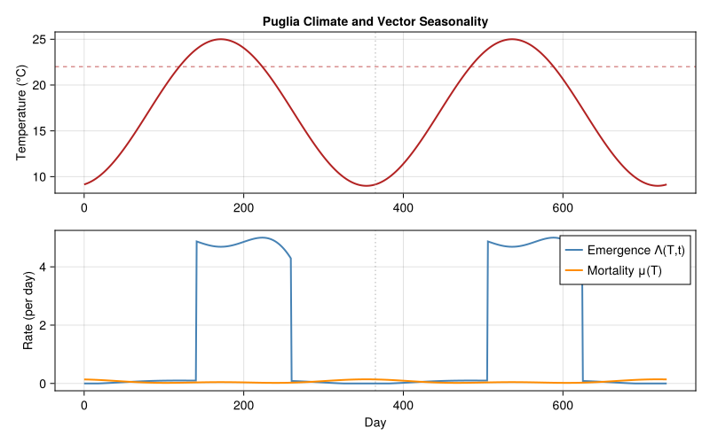
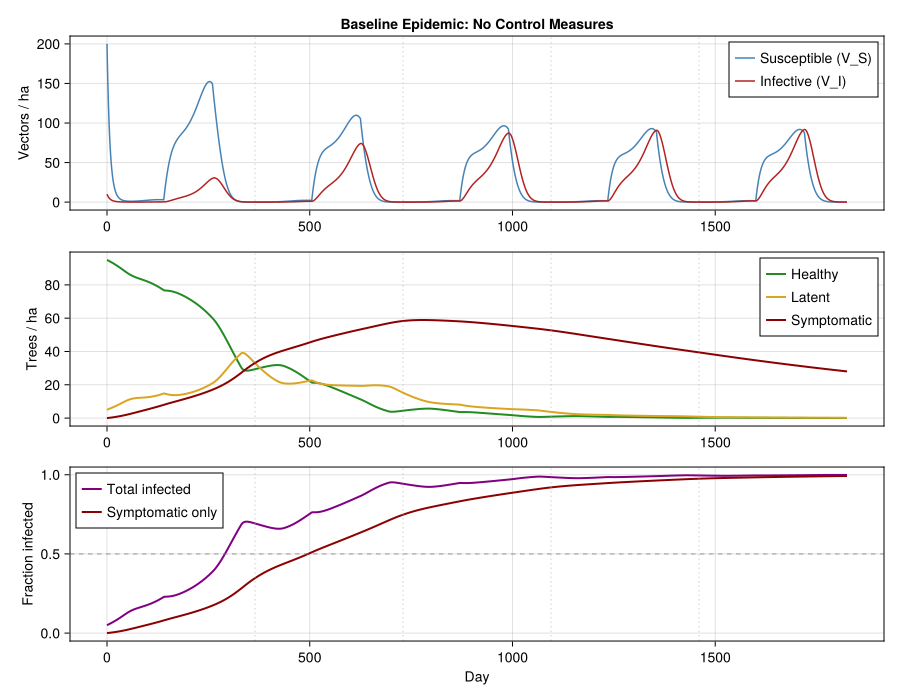
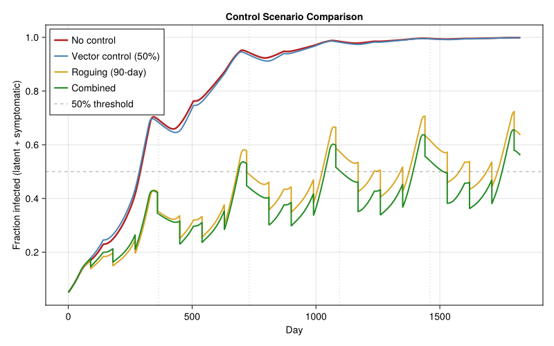
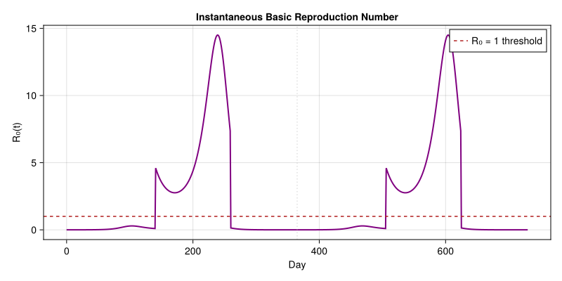
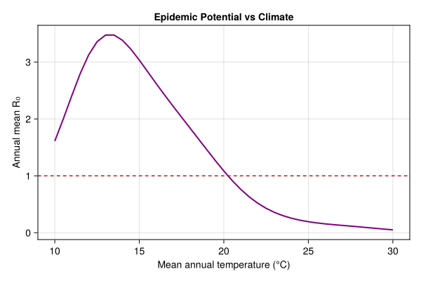

Xylella fastidiosa Transmission in Olive Groves
Simon Frost
- Introduction
- Model Description
- Parameters
- Temperature and Vector Seasonality
- Model Implementation
- Baseline Epidemic (No Control)
- Annual Summary
- Control Scenarios
- Five-Year Control Summary
- Basic Reproduction Number
- Discussion
Primary reference: (Weber et al. 2026).
Introduction
Note — simplified pedagogical reproduction. This vignette implements a 5-compartment ODE skeleton (VS, VI, PH, PL, P_I) of Weber et al.’s 14-compartment system (7 ODEs + 7 DDEs) that uses delay differential equations for the slow within-host olive disease progression and explicit pre-imaginal vector, herbaceous-vegetation, non-host-shrub, and reservoir-plant compartments. Transmission and recovery rates here are order-of-magnitude estimates, not the full calibrated values from the paper’s Table S1. Use it for the qualitative seasonal-forcing and control-scenario logic; for production work, port the full DDE system using
DelayDiffEq.jl.
Xylella fastidiosa is a xylem-dwelling bacterium that has devastated olive production in the Puglia region of southern Italy since its first detection in 2013. The pathogen is transmitted by xylem-feeding insect vectors, primarily the meadow spittlebug Philaenus spumarius in European olive groves. The resulting disease — Olive Quick Decline Syndrome (OQDS) — causes progressive desiccation and death of olive trees over 3–5 years, with no curative treatment available.
Weber et al. (2026) developed a comprehensive eco-epidemiological model coupling the temperature-dependent population dynamics of the vector with the slow disease dynamics in olive trees. The full model contains 14 coupled ordinary and delay differential equations tracking vector life stages, vector infection status, and olive disease progression.
This vignette implements a simplified 5-compartment version that captures the essential eco-epidemiological coupling: seasonal vector demography drives pathogen acquisition and inoculation, while the slow disease progression in trees creates a growing reservoir of inoculum across years. The model illustrates why Xylella epidemics are multi-year processes and why both vector management and early detection are critical control strategies.
Key references:
- Weber, L., et al. (2026). Temperature-driven eco-epidemiological model for Xylella fastidiosa in Mediterranean olive groves.
- Cornara, D., et al. (2019). Spittlebugs as vectors of Xylella fastidiosa in olive orchards in Italy. Journal of Pest Science 92:521–530.
- EFSA (2019). Update of the Scientific Opinion on the risks to plant health posed by Xylella fastidiosa in the EU territory.
Model Description
Compartments
The model tracks five state variables:
| Symbol | Description | Units |
|---|---|---|
| $V_S(t)$ | Susceptible adult vectors | individuals/ha |
| $V_I(t)$ | Infective adult vectors | individuals/ha |
| $P_H(t)$ | Healthy olive trees | trees/ha |
| $P_L(t)$ | Latently infected trees (asymptomatic) | trees/ha |
| $P_I(t)$ | Symptomatic infected trees | trees/ha |
Governing Equations
\[\begin{aligned} \frac{dV_S}{dt} &= \Lambda_V(T,t) - \beta_{VP} \, V_S \frac{P_I + \kappa P_L}{P_{\mathrm{total}}} - \mu_V(T) \, V_S \\[6pt] \frac{dV_I}{dt} &= \beta_{VP} \, V_S \frac{P_I + \kappa P_L}{P_{\mathrm{total}}} - \mu_V(T) \, V_I \\[6pt] \frac{dP_H}{dt} &= -\beta_{PV} \, P_H \frac{V_I}{V_{\mathrm{total}}} + r \, P_L \\[6pt] \frac{dP_L}{dt} &= \beta_{PV} \, P_H \frac{V_I}{V_{\mathrm{total}}} - \sigma \, P_L - r \, P_L \\[6pt] \frac{dP_I}{dt} &= \sigma \, P_L - d \, P_I \end{aligned}\]
where $P_{\mathrm{total}} = P_H + P_L + P_I$, $V_{\mathrm{total}} = V_S + V_I$, and $\kappa$ is the relative infectiousness of latently infected trees (reduced compared to symptomatic).
Key Processes
- Vector emergence $\Lambda_V(T,t)$: Temperature-dependent and seasonal, reflecting the univoltine life cycle of P. spumarius with adults emerging in late spring.
- Pathogen acquisition $\beta_{VP}$: Vectors become infective by feeding on infected trees. Xylella colonizes the vector foregut (non-persistent, non-circulative transmission).
- Pathogen inoculation $\beta_{PV}$: Infective vectors transmit the bacterium to healthy trees during xylem feeding.
- Latent period $1/\sigma$: Time from initial infection to symptom expression (~6–12 months for olive).
- Non-systemic recovery $r$: Some early-stage infections remain localized and the tree can recover.
- Disease mortality $d$: Trees with advanced OQDS eventually die.
Parameters
using PhysiologicallyBasedDemographicModels
using OrdinaryDiffEq
using CairoMakie
# ── Vector parameters ──────────────────────────────────────────────
const Λ_MAX = 5.0 # max vector emergence rate (vectors/ha/day)
const T_OPT_V = 22.0 # optimal emergence temperature (°C)
const T_WIDTH_V = 12.0 # thermal width for emergence
const EMERGE_START = 140 # day-of-year emergence begins (~late May)
const EMERGE_END = 260 # day-of-year emergence ends (~mid Sept)
const EMERGE_BG = 0.02 # background emergence fraction outside season
# Vector mortality: U-shaped with minimum at 20°C
const μ_V_MIN = 0.02 # minimum daily mortality rate
const μ_V_QUAD = 0.001 # quadratic mortality coefficient
# ── Disease transmission parameters (Weber 2026, Table S1) ────────
const β_VP = 0.03 # acquisition rate (per vector per day per infected-tree fraction)
const β_PV = 0.03 # inoculation rate (per tree per day per infective-vector fraction)
const κ = 0.3 # relative infectiousness of latent trees
const σ = 1.0 / 180.0 # latent-to-symptomatic rate (6-month latency)
const r_recovery = 0.002 # non-systemic recovery rate (per day)
const d_disease = 0.001 # disease-induced tree mortality (per day, ~3 yr to death)
# ── Temperature forcing (Puglia, southern Italy) ──────────────────
const T_MEAN = 17.0 # mean annual temperature (°C)
const T_AMP = 8.0 # seasonal amplitude (°C)
T_puglia(t) = T_MEAN + T_AMP * sin(2π * (t - 80) / 365)
# ── Initial conditions ────────────────────────────────────────────
const P_TOTAL_0 = 100.0 # trees per hectare
const P_H_0 = 95.0 # healthy trees
const P_L_0 = 5.0 # latently infected (5% initial prevalence)
const P_I_0 = 0.0 # symptomatic (none initially)
const V_S_0 = 200.0 # susceptible vectors per hectare
const V_I_0 = 10.0 # infective vectors
println("Xylella eco-epidemiological model parameters")
println("="^55)
println("Vector emergence: Λ_max = $Λ_MAX vectors/ha/day")
println(" Season: day $EMERGE_START – $EMERGE_END")
println("Vector mortality: μ(T) = $μ_V_MIN + $μ_V_QUAD·(T-20)²")
println("\nTransmission: β_VP = $β_VP, β_PV = $β_PV")
println(" Latent infectiousness κ = $κ")
println(" Latent period: $(Int(round(1/σ))) days")
println(" Recovery rate: $r_recovery /day")
println(" Disease mortality: $d_disease /day (~$(Int(round(1/d_disease/365))) years)")
println("\nInitial state: $(Int(P_H_0)) healthy, $(Int(P_L_0)) latent, $(Int(P_I_0)) symptomatic trees")
println(" Vectors: $(Int(V_S_0)) susceptible, $(Int(V_I_0)) infective")Xylella eco-epidemiological model parameters
=======================================================
Vector emergence: Λ_max = 5.0 vectors/ha/day
Season: day 140 – 260
Vector mortality: μ(T) = 0.02 + 0.001·(T-20)²
Transmission: β_VP = 0.03, β_PV = 0.03
Latent infectiousness κ = 0.3
Latent period: 180 days
Recovery rate: 0.002 /day
Disease mortality: 0.001 /day (~3 years)
Initial state: 95 healthy, 5 latent, 0 symptomatic trees
Vectors: 200 susceptible, 10 infectiveTemperature and Vector Seasonality
P. spumarius is univoltine: eggs overwinter, nymphs develop in spring on herbaceous vegetation, and adults emerge in late May–June. Adults then move to olive trees for xylem feeding, creating the transmission window. Vector abundance declines in autumn as adults senesce.
# Temperature-dependent functions
function vector_emergence(T, t)
day = mod(t, 365.0)
thermal = max(0.0, 1.0 - ((T - T_OPT_V) / T_WIDTH_V)^2)
seasonal = (EMERGE_START < day < EMERGE_END) ? 1.0 : EMERGE_BG
return Λ_MAX * thermal * seasonal
end
vector_mortality(T) = μ_V_MIN + μ_V_QUAD * (T - 20.0)^2
# Plot seasonal patterns
days = 0:1:730
temps = T_puglia.(days)
emerg = [vector_emergence(T_puglia(t), t) for t in days]
mort = vector_mortality.(temps)
fig = Figure(size=(800, 500))
ax1 = Axis(fig[1, 1], ylabel="Temperature (°C)", title="Puglia Climate and Vector Seasonality")
lines!(ax1, days, temps, color=:firebrick, linewidth=2)
hlines!(ax1, [T_OPT_V], color=:firebrick, linestyle=:dash, alpha=0.5)
ax2 = Axis(fig[2, 1], xlabel="Day", ylabel="Rate (per day)")
lines!(ax2, days, emerg, color=:steelblue, linewidth=2, label="Emergence Λ(T,t)")
lines!(ax2, days, mort, color=:darkorange, linewidth=2, label="Mortality μ(T)")
axislegend(ax2, position=:rt)
for ax in [ax1, ax2]
vlines!(ax, [365], color=:gray60, linestyle=:dot, alpha=0.5)
end
linkxaxes!(ax1, ax2)
fig
Model Implementation
function xylella_rhs!(du, u, p, t)
V_S, V_I, P_H, P_L, P_I = u
T = p.T_func(t)
V_total = max(V_S + V_I, 1.0) # avoid division by zero
P_total = max(P_H + P_L + P_I, 1.0)
# Vector processes
Λ = vector_emergence(T, t) * p.Λ_scale
μ = vector_mortality(T)
# Transmission: vectors acquire from symptomatic + (reduced) latent trees
infective_frac = (P_I + p.κ * P_L) / P_total
acquisition = p.β_VP * V_S * infective_frac
# Inoculation: infective vectors transmit to healthy trees
vector_frac = V_I / V_total
inoculation = p.β_PV * P_H * vector_frac
# Vector ODEs
du[1] = Λ - acquisition - μ * V_S # dV_S/dt
du[2] = acquisition - μ * V_I # dV_I/dt
# Tree ODEs
du[3] = -inoculation + p.r * P_L # dP_H/dt
du[4] = inoculation - p.σ * P_L - p.r * P_L # dP_L/dt
du[5] = p.σ * P_L - p.d * P_I # dP_I/dt
end
# Parameter container
base_params = (
T_func = T_puglia,
β_VP = β_VP,
β_PV = β_PV,
κ = κ,
σ = σ,
r = r_recovery,
d = d_disease,
Λ_scale = 1.0, # multiplier for control scenarios
)
u0 = [V_S_0, V_I_0, P_H_0, P_L_0, P_I_0]
tspan = (0.0, 1825.0) # 5 years
println("Model ODE system: 5 equations (2 vector + 3 tree compartments)")
println("Simulation: $(Int(tspan[2])) days ($(Int(tspan[2]/365)) years)")Model ODE system: 5 equations (2 vector + 3 tree compartments)
Simulation: 1825 days (5 years)Baseline Epidemic (No Control)
prob = ODEProblem(xylella_rhs!, u0, tspan, base_params)
sol = solve(prob, Tsit5(); saveat=1.0, abstol=1e-8, reltol=1e-8)
t_sol = sol.t
V_S_sol = [sol.u[i][1] for i in eachindex(sol.t)]
V_I_sol = [sol.u[i][2] for i in eachindex(sol.t)]
P_H_sol = [sol.u[i][3] for i in eachindex(sol.t)]
P_L_sol = [sol.u[i][4] for i in eachindex(sol.t)]
P_I_sol = [sol.u[i][5] for i in eachindex(sol.t)]
fig = Figure(size=(900, 700))
# Vector dynamics
ax1 = Axis(fig[1, 1], ylabel="Vectors / ha",
title="Baseline Epidemic: No Control Measures")
lines!(ax1, t_sol, V_S_sol, color=:steelblue, linewidth=1.5, label="Susceptible (V_S)")
lines!(ax1, t_sol, V_I_sol, color=:firebrick, linewidth=1.5, label="Infective (V_I)")
axislegend(ax1, position=:rt)
# Tree dynamics
ax2 = Axis(fig[2, 1], ylabel="Trees / ha")
lines!(ax2, t_sol, P_H_sol, color=:forestgreen, linewidth=2, label="Healthy")
lines!(ax2, t_sol, P_L_sol, color=:goldenrod, linewidth=2, label="Latent")
lines!(ax2, t_sol, P_I_sol, color=:darkred, linewidth=2, label="Symptomatic")
axislegend(ax2, position=:rt)
# Infection prevalence
ax3 = Axis(fig[3, 1], xlabel="Day", ylabel="Fraction infected")
prevalence = (P_L_sol .+ P_I_sol) ./ (P_H_sol .+ P_L_sol .+ P_I_sol)
symptomatic_frac = P_I_sol ./ (P_H_sol .+ P_L_sol .+ P_I_sol)
lines!(ax3, t_sol, prevalence, color=:purple, linewidth=2, label="Total infected")
lines!(ax3, t_sol, symptomatic_frac, color=:darkred, linewidth=2, label="Symptomatic only")
hlines!(ax3, [0.5], color=:gray50, linestyle=:dash, alpha=0.5)
axislegend(ax3, position=:lt)
for ax in [ax1, ax2, ax3]
for yr in 1:4
vlines!(ax, [yr * 365], color=:gray70, linestyle=:dot, alpha=0.4)
end
end
linkxaxes!(ax1, ax2, ax3)
fig
The epidemic unfolds over multiple years. Vector populations cycle annually with summer peaks, while tree infection accumulates gradually. The long latent period (6 months) means trees infected in one summer show symptoms the following spring, creating a delayed wave of visible disease.
Annual Summary
println("Year-end infection status (baseline):")
println("-"^55)
println("Year | Healthy | Latent | Symptomatic | Prevalence")
println("-"^55)
for yr in 1:5
idx = findfirst(t -> t >= yr * 365, t_sol)
if idx !== nothing
h = P_H_sol[idx]
l = P_L_sol[idx]
s = P_I_sol[idx]
total = h + l + s
prev = (l + s) / total * 100
println(" $yr | $(round(h, digits=1)) | $(round(l, digits=1)) | $(round(s, digits=1)) | $(round(prev, digits=1))%")
end
endYear-end infection status (baseline):
-------------------------------------------------------
Year | Healthy | Latent | Symptomatic | Prevalence
-------------------------------------------------------
1 | 29.4 | 33.0 | 33.1 | 69.3%
2 | 4.4 | 15.3 | 58.3 | 94.3%
3 | 0.9 | 3.7 | 52.7 | 98.5%
4 | 0.2 | 0.8 | 39.5 | 99.5%
5 | 0.0 | 0.2 | 28.0 | 99.9%Control Scenarios
Scenario 1: Vector Management
Reducing vector populations by 50% (through removal of weed hosts where nymphs develop, or targeted insecticide applications during the nymphal stage).
Scenario 2: Early Detection and Roguing
Symptomatic trees are detected and removed every 90 days. This is implemented via a callback that removes a fraction of symptomatic trees at regular intervals.
Scenario 3: Combined Control
Both vector management (50% reduction) and roguing simultaneously.
# Scenario 1: Vector control (50% reduction in emergence)
params_vc = (; base_params..., Λ_scale=0.5)
prob_vc = ODEProblem(xylella_rhs!, u0, tspan, params_vc)
sol_vc = solve(prob_vc, Tsit5(); saveat=1.0, abstol=1e-8, reltol=1e-8)
# Scenario 2: Roguing (remove 80% of symptomatic trees every 90 days)
# Implement via piecewise integration with state resets
function solve_with_roguing(u0, tspan, params; roguing_interval=90.0, roguing_frac=0.8)
t_current = tspan[1]
t_end = tspan[2]
all_t = Float64[]
all_u = Vector{Vector{Float64}}()
u_now = copy(u0)
while t_current < t_end
t_next = min(t_current + roguing_interval, t_end)
prob_seg = ODEProblem(xylella_rhs!, u_now, (t_current, t_next), params)
sol_seg = solve(prob_seg, Tsit5(); saveat=1.0, abstol=1e-8, reltol=1e-8)
for i in eachindex(sol_seg.t)
push!(all_t, sol_seg.t[i])
push!(all_u, copy(sol_seg.u[i]))
end
u_now = copy(sol_seg.u[end])
# Roguing: remove fraction of symptomatic trees
u_now[5] *= (1.0 - roguing_frac)
t_current = t_next
end
return (t=all_t, u=all_u)
end
sol_rogue = solve_with_roguing(u0, tspan, base_params)
# Scenario 3: Combined
sol_combined = solve_with_roguing(u0, tspan, params_vc)
# Extract prevalence for each scenario
function get_prevalence(sol)
prev = Float64[]
for i in eachindex(sol.t)
h, l, s = sol.u[i][3], sol.u[i][4], sol.u[i][5]
total = max(h + l + s, 1.0)
push!(prev, (l + s) / total)
end
return prev
end
prev_base = get_prevalence(sol)
prev_vc = get_prevalence(sol_vc)
prev_rogue = get_prevalence(sol_rogue)
prev_combined = get_prevalence(sol_combined)
fig = Figure(size=(800, 500))
ax = Axis(fig[1, 1], xlabel="Day", ylabel="Fraction infected (latent + symptomatic)",
title="Control Scenario Comparison")
lines!(ax, sol.t, prev_base, color=:firebrick, linewidth=2.5, label="No control")
lines!(ax, sol_vc.t, prev_vc, color=:steelblue, linewidth=2, label="Vector control (50%)")
lines!(ax, sol_rogue.t, prev_rogue, color=:goldenrod, linewidth=2, label="Roguing (90-day)")
lines!(ax, sol_combined.t, prev_combined, color=:forestgreen, linewidth=2, label="Combined")
hlines!(ax, [0.5], color=:gray50, linestyle=:dash, alpha=0.5, label="50% threshold")
for yr in 1:4
vlines!(ax, [yr * 365], color=:gray70, linestyle=:dot, alpha=0.4)
end
axislegend(ax, position=:lt)
fig
Five-Year Control Summary
function year5_summary(sol, label)
idx = findfirst(t -> t >= 1825.0, sol.t)
if idx === nothing; idx = length(sol.t); end
h, l, s = sol.u[idx][3], sol.u[idx][4], sol.u[idx][5]
total = max(h + l + s, 0.1)
prev = (l + s) / total * 100
alive = h + l + s
return (label=label, healthy=h, latent=l, symptomatic=s,
alive=alive, prevalence=prev)
end
scenarios = [
year5_summary(sol, "No control"),
year5_summary(sol_vc, "Vector control"),
year5_summary(sol_rogue, "Roguing"),
year5_summary(sol_combined, "Combined"),
]
println("Five-year outcomes by control strategy:")
println("="^70)
println("Strategy | Alive | Healthy | Latent | Sympt. | Prevalence")
println("-"^70)
for s in scenarios
println("$(rpad(s.label, 16))| $(rpad(round(s.alive, digits=1), 6))| " *
"$(rpad(round(s.healthy, digits=1), 8))| " *
"$(rpad(round(s.latent, digits=1), 7))| " *
"$(rpad(round(s.symptomatic, digits=1), 7))| $(round(s.prevalence, digits=1))%")
endFive-year outcomes by control strategy:
======================================================================
Strategy | Alive | Healthy | Latent | Sympt. | Prevalence
----------------------------------------------------------------------
No control | 28.2 | 0.0 | 0.2 | 28.0 | 99.9%
Vector control | 28.4 | 0.1 | 0.2 | 28.1 | 99.8%
Roguing | 3.5 | 1.3 | 1.7 | 0.5 | 63.7%
Combined | 5.0 | 2.2 | 2.2 | 0.6 | 56.1%Basic Reproduction Number
The basic reproduction number $R_0$ determines whether the pathogen can invade a fully susceptible tree population. For this simplified model:
\[R_0 = \frac{\beta_{VP} \cdot \beta_{PV} \cdot \bar{V}} {\mu_V \cdot \bar{P} \cdot (\sigma + r)}\]
where $\bar{V}$ and $\bar{P}$ are the equilibrium vector and tree densities in the disease-free state. $R_0 > 1$ indicates the epidemic can spread.
Since vector density is seasonal, $R_0$ varies through the year. We compute an instantaneous $R_0(t)$ and the time-averaged annual value.
function R0_instantaneous(T, t)
Λ = vector_emergence(T, t)
μ = vector_mortality(T)
V_eq = Λ / μ # disease-free vector equilibrium (instantaneous)
if V_eq < 0.1
return 0.0
end
return β_VP * β_PV * V_eq / (μ * P_TOTAL_0 * (σ + r_recovery))
end
# R₀ over two years
R0_vals = [R0_instantaneous(T_puglia(t), t) for t in days]
fig = Figure(size=(800, 400))
ax = Axis(fig[1, 1], xlabel="Day", ylabel="R₀(t)",
title="Instantaneous Basic Reproduction Number")
lines!(ax, days, R0_vals, color=:purple, linewidth=2)
hlines!(ax, [1.0], color=:firebrick, linestyle=:dash, linewidth=1.5, label="R₀ = 1 threshold")
axislegend(ax, position=:rt)
for yr in 1:1
vlines!(ax, [yr * 365], color=:gray70, linestyle=:dot, alpha=0.4)
end
fig
# Time-averaged annual R₀
R0_annual = sum(R0_vals[1:366]) / 366
println("Time-averaged annual R₀ = $(round(R0_annual, digits=2))")
if R0_annual > 1
println("→ Epidemic can spread (R₀ > 1)")
else
println("→ Epidemic cannot sustain (R₀ < 1)")
end
# R₀ vs mean temperature
T_range = 10.0:0.5:30.0
R0_by_temp = Float64[]
for T_mean in T_range
T_func_local(t) = T_mean + T_AMP * sin(2π * (t - 80) / 365)
R0_annual_local = sum([R0_instantaneous(T_func_local(t), t) for t in 0:365]) / 366
push!(R0_by_temp, R0_annual_local)
end
fig = Figure(size=(600, 400))
ax = Axis(fig[1, 1], xlabel="Mean annual temperature (°C)",
ylabel="Annual mean R₀",
title="Epidemic Potential vs Climate")
lines!(ax, collect(T_range), R0_by_temp, color=:purple, linewidth=2)
hlines!(ax, [1.0], color=:firebrick, linestyle=:dash, linewidth=1.5)
figTime-averaged annual R₀ = 2.22
→ Epidemic can spread (R₀ > 1)
Discussion
The model reproduces several key features of the Xylella epidemic observed in Puglia:
Multi-year progression: The long latent period (6 months) and low per-contact transmission probability mean the epidemic builds gradually over years, not weeks. This matches field observations where grove-level infection took 3–5 years to reach high prevalence.
Seasonal transmission window: Vector-mediated transmission occurs primarily during summer when adult P. spumarius are active on olive trees. Winter provides a natural interruption, but the persistent infection in trees carries the pathogen between seasons.
Control effectiveness: Vector control alone slows but does not stop the epidemic. Roguing (removing symptomatic trees) reduces the inoculum reservoir. Combined strategies are most effective, consistent with EFSA recommendations for managing Xylella containment zones.
Non-systemic recovery: A fraction of early-stage infections can be cleared by the tree, especially if the bacterium hasn’t colonized the entire vascular system. This provides a biological basis for the observation that not all initially infected trees progress to OQDS.
Limitations
This simplified model omits several features of the full Weber (2026) model: delay differential equations for disease stage progression, explicit nymphal vector stages, water stress effects on tree susceptibility, and spatial spread between groves. The phenology model in Vignette 43 provides a more detailed treatment of vector development timing.
Connection to Other Vignettes
- Vignette 43 (P. spumarius phenology): Provides the detailed temperature-driven development model for the vector’s nymphal stages, which determines the timing of adult emergence used here.
- Vignette 44 (Risk index): The RI framework could be applied to assess geographic variation in Xylella establishment risk.
<div id="refs" class="references csl-bib-body hanging-indent">
<div id="ref-Weber2026Xylella" class="csl-entry">
Weber, Luca, Luca Rossini, Beatrice Gardella, et al. 2026. “Temperature-Driven Eco-Epidemiological Model for Xylella Fastidiosa in Mediterranean Olive Groves.” Science of The Total Environment 968:
</div>
</div>